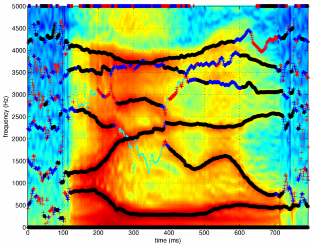
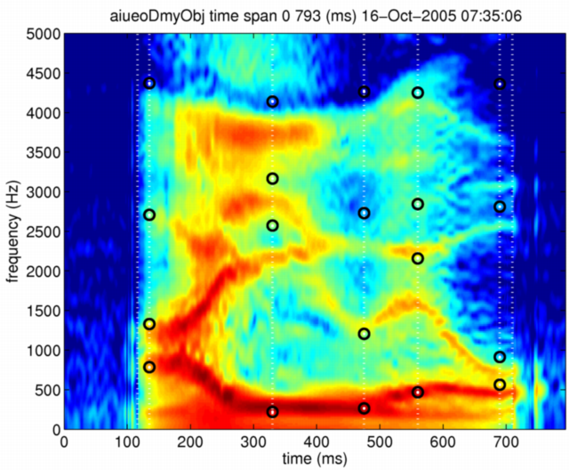
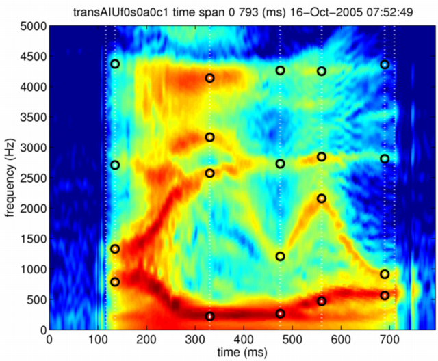

| | 母音部フォルマントの変換 | Contents | Index |
ここでは，母音部のフォルマント周波数を操作する例を示す。 先ほどと同じ母音連鎖を例とするため，モーフィングオブジェクトを作成する。
[x,fs]=wavread('../STRAIGHTV40_003b/vaiueo2d.wav');
aiueoObj = createMobject
aiueoObj = updateFieldOfMobject(aiueoObj,'waveform',x);
aiueoObj = updateFieldOfMobject(aiueoObj,'samplingFrequency',fs);
aiueoObj = executeSTRAIGHTanalysisM(aiueoObj);
こうして作成されたオブジェクトから，フォルマントを求めることとする。 声道の伝達関数の極として定義されるフォルマントを音声波形から求めることは， 声帯音源波形が直接観測できないものであるため， 本来は不可能である。 ここでは，STRAIGHT分析により求められたスペクトログラムが， 声帯音源の大局的なスペクトル傾斜と放射特性に起因する傾斜を除けば， 声道の伝達関数の良い近似になっていると仮定して極を求め， その極の中からフォルマントを選択することとする。 この操作はあくまでも近似であり，どのていどの精度が保証できるかは， 注意深いシミュレーションなどにより確認する必要があることを指摘しておく。
この操作のために，STRAIGHTを応用したツールの一つである polesFromLPCSTRAIGHTという関数を利用する。 この関数はSTRAIGHTとは別途配布されるSTRAIGHTtoolsというディレクトリに 入っているので，必要に応じてインストールして使用すること。 具体的な操作は以下のようになる。
poleAttributes = polesFromLPCSTRAIGHT prmLPC = poleAttributes.analysisConditions; poleAttributes = polesFromLPCSTRAIGHT(aiueoObj,prmLPC); ffreq = poleAttributes.fornamtFrequencyTable; fband = poleAttributes.formantBandWidthTable;
最後の二行は，特定の時刻での極の情報を簡単に読み出せるようにするためのものである。 これらの操作について，簡単に説明する。 LPC分析を行うための条件は以下のようになっている。
prmLPC =
DisplayOn: 1
fsforLPCAnalysis: 10000
nLPCorder: 14
声道の伝達関数をLPCにより近似することが妥当と言えるのは 4〜5kHzが上限であるため，ここでは，fsforLPCAnalysisというフィールドに 仮想の標本化周波数として10000Hzを想定することで，5kHzまでのSTRAIGHT スペクトルから極を求めるようにしている。 LPC分析の次数を指定するnLPCorderに指定した14という次数は， 声道の伝達関数に存在すると考えられる極の個数（声道長の二倍の長さを仮想の 標本化周波数の一周期の間に音が伝播する長さで割った値）よりも4多い。 これは，声帯音源や放射特性などのLPCモデルに含まれない要因よる モデルの不適合性を補償する成分に割り当てるためである。 なお，大局的なスペクトル傾斜は，LPC分析の前処理で取り除いている。 求められた極をSTRAIGHTスペクトログラムに重ね書きしたものを以下に示す。

推定された極は，帯域幅により以下のように色分けしている。 黒（250Hz以下），青（500Hz以下），赤（1000Hz以下），水色（それ以外）。 これらから，それぞれの母音に対応する区間から最も極の位置の変動が少ない部分を代表として選択し， 極の周波数と帯域幅を調べる。 以下は，Matlabのコマンド窓での対話を編集したものである。 一部の行の値は 1000倍する必要がある。
>> posid=135;ffreq(ffreq(:,posid)>0,posid)',fband(ffreq(:,posid)>0,posid)'
0.8139 1.2509 2.6297 4.1021 3.5927 3.1871 5.0000
0.2200 0.1482 0.2521 0.0893 0.3030 1.1417 2.8656
>> posid=330;ffreq(ffreq(:,posid)>0,posid)',fband(ffreq(:,posid)>0,posid)'
5.0000 3.7088 3.7530 2.9077 2.1414 0.2876 1.5759
0.2913 0.1316 0.4489 0.1538 0.1082 0.0395 1.4989
>> posid=475;ffreq(ffreq(:,posid)>0,posid)',fband(ffreq(:,posid)>0,posid)'
1.3162 0.2904 2.3239 3.3390 3.9019 3.6570 5.0000
0.1322 0.0508 0.0684 0.2570 0.0763 0.4822 1.2828
>> posid=560;ffreq(ffreq(:,posid)>0,posid)',fband(ffreq(:,posid)>0,posid)'
0.4704 1.6101 2.2631 3.2147 4.1644 3.6584 5.0000
0.0446 0.1010 0.1184 0.3786 0.1176 0.3810 1.8915
>> posid=690;ffreq(ffreq(:,posid)>0,posid)',fband(ffreq(:,posid)>0,posid)'
5.0000 4.2418 3.6352 3.0548 2.5688 0.7286 0.4360
153.3986 646.0595 118.9034 56.7814 31.9729 197.6658 88.7294
これらに基づき，特徴点を以下のように設定する。 ここでは，第三フォルマントまでを選択し， 上限の周波数の特徴点として，梨状窩による零の直前の極の周波数を用いることとする。 なお，この時刻と周波数の対は，どのような順序で並べても良いことを注意しておく。
ranwnch =[116 -10; ... 710 -10; ... 135 814;135 1251;135 2630;135 4102; ... 330 288;330 2141;330 2908;330 3709; ... 475 290;475 1316;475 2323;475 3902; ... 560 470;560 1610;560 2263;560 4164; ... 690 436;690 729;690 2569;690 3652]; aiueoObj = setAnchorFromRawAnchor(aiueoObj,ranwnch)
こうして付与された特徴点の内容を表示して確認しておく。
>> aiueoObj.anchorFrequency(:,1:4)
ans =
-10 0 0 0
814 1251 2630 4102
288 2141 2908 3709
290 1316 2323 3902
470 1610 2263 4164
436 729 2569 3652
-10 0 0 0
スペクトログラムとの対応関係は，以下のようになる。
displayMobject(aiueoObj,'anchorFrequency','aiueoObj'); axis([0 794 0 5000])スペクトログラムの特徴を適切にとらえた点に特徴点が付与されていることが分かる。
ここで，フォルマントを移動させる目標として，別の話者のフォルマントを用いることとする。 ある話者のフォルマント(F1〜F3)と，上限周波数が以下のようであったとする。
母音, F1, F2, F3, 上限 「あ」, 785, 1329, 2708, 4370 「い」, 220, 2573, 3166, 4138 「う」, 264, 1205, 2730, 4264 「え」, 468, 2157, 2844, 4250 「お」, 563, 913, 2811, 4360
このフォンルマント構造を移動の目標として用いるため，まず目標となるダミーの変数を作成する。
aiueoDmyObj = aiueoObj;
このダミー変数の特徴点周波数を上の表に基づいて以下のように書き換える。
aiueoDmyObj.anchorFrequency(2,1:4) = [785, 1329, 2708, 4370]; aiueoDmyObj.anchorFrequency(3,1:4) = [220, 2573, 3166, 4138]; aiueoDmyObj.anchorFrequency(4,1:4) = [264, 1205, 2730, 4264]; aiueoDmyObj.anchorFrequency(5,1:4) = [468, 2157, 2844, 4250]; aiueoDmyObj.anchorFrequency(6,1:4) = [563, 913, 2811, 4360];
念のために結果を確認しておく。
>> aiueoDmyObj.anchorFrequency(:,1:4)
ans =
-10 0 0 0
785 1329 2708 4370
220 2573 3166 4138
264 1205 2730 4264
468 2157 2844 4250
563 913 2811 4360
-10 0 0 0
このようにして設定された目標となる特徴点をスペクトログラムに重ねて表示する。

「あ」以外の母音では，フォルマントが大きく異なっていることが分かる。 この目標に向けて，時間周波数軸のみの変形を行う。
mRate.F0 =0; mRate.aperiodicity=0; mRate.spectrum=0; mRate.coordinate=1; transAIUf0s0a0c1 = timeFrequencySTRAIGHTmorphing(aiueoObj,aiueoDmyObj,mRate,'log');
結果を，同様にスペクトログラムに重ねて表示する。
displayMobject(transAIUf0s0a0c1,'anchorFrequency','transAIUf0s0a0c1');

こうして別話者のフォルマント情報に基づいて変換されたモーフィングオブジェクトを用いて，合成音声を作成する。
sytransAIUf0s0a0c1 = executeSTRAIGHTsynthesisM(transAIUf0s0a0c1);
ところで，元の話者の基本周波数の平均値は115Hzであり， 別話者の基本周波数の平均値は194Hzであった。 合成音声の基本周波数がこの値になるように 基本周波数の値を1.69倍に変換したものも作成しておく。
transAIUf0s0a0c1.F0 = transAIUf0s0a0c1.F0*1.69; sytransAIUf169s0a0c1 = executeSTRAIGHTsynthesisM(transAIUf0s0a0c1);
以下に，原音声と変換された音声をリンクしておく。 基本周波数も併せて変換することにより，母音連鎖が別話者により発声された場合になるであろうものに近づいていることが分かる。 また，母音重心の少数のフォルマントを操作するだけで、違和感の少ない話者変換ができていることに，注意すべきである。
| | 母音部フォルマントの変換 | Contents | Index |